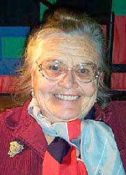

Updated 2013 November 6
Introduction
This site is getting some 500-600 visitors a day. Thank you for your interest.
There's a quotation attributed to Burke: "All that is required for evil to triumph is for good men to do nothing."
Comments about life, colorForth and GreenArrays
You're welcome to email me your comments. I like to hear from people, and appreciate your suggestions. But there are several problems:
- Such email usually arrives in my junk mail folder. I try to retrieve them, but a distinguishing subject line would help.
- I won't respond to these emails, except on future postings. 'Cause I don't know who you are, and the the web is full of predators.
My experience programming GreenArrays' Evaluation Board.
A dialect of Forth that uses color to replace punctuation. Native Pentium and Windows versions. Produces extremely compact programs. Instant compile from pre-parsed source.
Latest changes are compressed source: colorForth, OKAD and GA4 in 290K (25%). Also blue words that are executed at edit time, for formatting text.
A suite of VLSI design tools for layout and simulation. Compact description of gates, cells and chip. Resulting GDS II file ready for fabrication.
Spectacular chip! 40 microcomputers, each with 128 words of 18-bit memory. Each capable of 700 Mips.
I'm pleased to announce the formation of this company. We plan to develop and exploit the concept of multi-computer chips. That gives me another point of contact: chuck@greenarraychips.com.

chipchuck@colorforth.com
Lives in Nevada at Lake Tahoe. Loves to hike the Tahoe Rim Trail as well as the Pacific Crest Trail.

Some pictures of my son
Recipes
This is a book I wrote about 1970. It describes the software that became Forth.
Books I like
Poems
Sometimes the pros say it best. To be perfectly clear, I've emphasized some lines.
Henry V, Shakespeare
Stout-Hearted Men, Hammerstein
Invictus, Henley
The Weariest River, Swinburne
Coloring, Sarah Hall Maney
Road Not Taken, Robert Frost
Mending Wall, Robert Frost
Stopping by Woods on a Snowy Evening, Robert Frost
Ulysses, Alfred Lord Tennyson
The Explorer, Rudyard Kipling
My Lost Youth, Henry Wadsworth Longfellow
High Flight, John Gillespie Magee